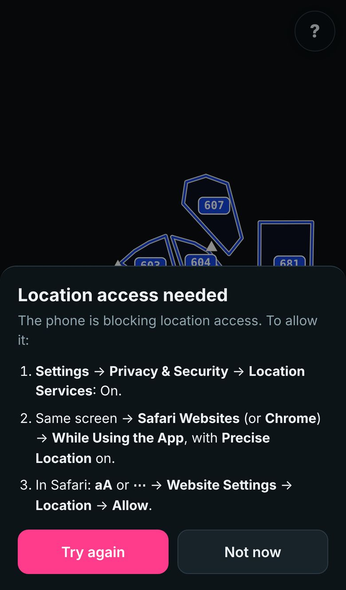
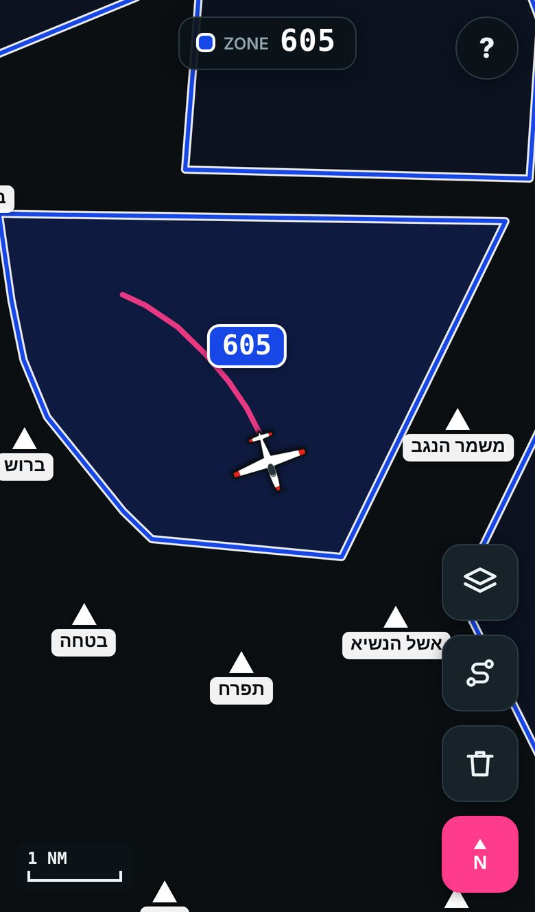
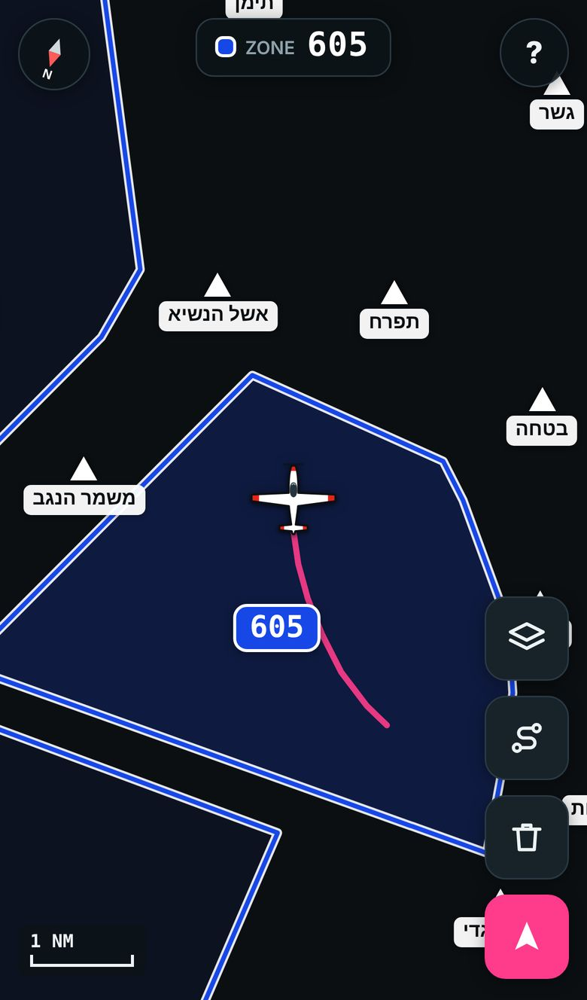
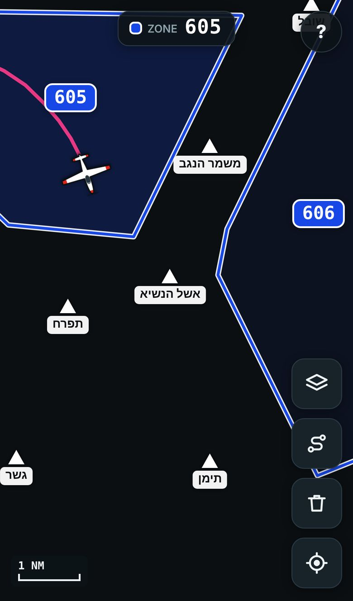
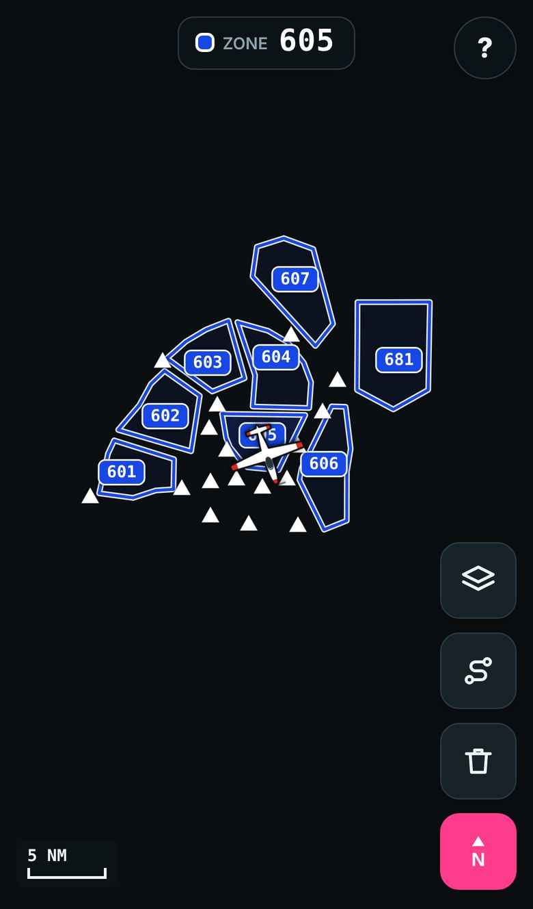

מפה נעה – סנוניות
מפה נעה לטלפון לאזורי האימון של הסנוניות: אזורים, נקודות דיווח, מיקום המטוס ונתיב הטיסה. אחרי שהמפה ירדה לטלפון, היא עובדת גם בלי קליטה סלולרית.
הכפתורים וההודעות באפליקציה כתובים באנגלית. במדריך הם מופיעים כפי שהם נראים על המסך, למשל Track up.
00התחלה מהירה
הגרסה הקצרה. כל נושא מוסבר בפירוט בפרקים הבאים.
פעם אחת, על הקרקע עם קליטה
- פתחו את
zivoznovich.github.io/snoniyot-mapבספארי (אייפון) או בכרום (אנדרואיד) ואשרו גישה למיקום. - הוסיפו למסך הבית, ומעכשיו פתחו את האפליקציה רק מהאייקון.
- השאירו אותה פתוחה כדקה, עד שמופיעה ההודעה ✓ Map ready for offline use.
- בדקו שהמטוס מופיע במיקום האמיתי שלכם.
בטיסה
| כדי… | עשו כך |
|---|---|
| לראות באיזה אזור אתם | תג ZONE בראש המסך |
| לעבור בין צפון למעלה לכיוון טיסה למעלה | לחיצה על כפתור המיקום הוורוד (למטה מימין) |
| לחזור למטוס | לחיצה על כפתור הכוונת האפור, או המתנה של 20 שניות |
| לחזור מהר לצפון למעלה | לחיצה על המצפן (למעלה משמאל) |
| להחליף רקע | כפתור השכבות: לוויין ← טופו ← ללא רקע |
| להציג או להסתיר את הנתיב | כפתור הנתיב |
| לנקות את הנתיב | שתי לחיצות על כפתור הפח |
| זום | צביטה, הקשה כפולה (הגדלה), או הקשה בשתי אצבעות (הקטנה) |
| לפתוח את המדריך | לחיצה על ? (למעלה מימין) |
01התקנה ראשונה
עושים את זה פעם אחת, על הקרקע, עם קליטה סלולרית או Wi-Fi.
- פתחו את
zivoznovich.github.io/snoniyot-mapבספארי (אייפון) או בכרום (אנדרואיד). - כשהטלפון שואל על מיקום, בחרו אפשר. אם בחרתם בזמן השימוש ביישום, ודאו גם שמיקום מדויק מופעל.
- הוסיפו את האפליקציה למסך הבית. באייפון: שתף ← הוסף למסך הבית. באנדרואיד: ⋮ ← הוספה למסך הבית (או התקנת אפליקציה).
- מעכשיו פתחו את האפליקציה רק מהאייקון במסך הבית. באייפון יש לאייקון אחסון נפרד מספארי.
- השאירו את האפליקציה פתוחה כדקה. בפינה השמאלית התחתונה מופיע Downloading map NN%, ובסוף ✓ Map ready for offline use.
- בדיקה: הפעילו מצב טיסה, סגרו את האפליקציה לגמרי ופתחו אותה שוב. המפה, האזורים והנקודות צריכים להופיע.
אם הגישה למיקום חסומה
אם הטלפון חוסם את המיקום, נפתח בתחתית המסך כרטיס עם השלבים שלמטה. בצעו אותם ולחצו Try again.

- הגדרות ← פרטיות ואבטחה ← שירותי מיקום: מופעל.
- באותו מסך ← אתרי Safari (או Chrome) ← בזמן השימוש ביישום, ומיקום מדויק מופעל.
- בספארי: aA או ⋯ ← הגדרות אתר ← מיקום ← אפשר.
כשמיקום מדויק כבוי, הטלפון מדווח מיקום שיכול לסטות בקילומטרים. האפליקציה תציג אז Location is approximate – turn on Precise Location.
02המסך
המפה ממלאת את כל המסך. כל השאר הם רכיבים קטנים מעליה, שאפשר להגיע אליהם עם האגודל.

- תג האזור (למעלה במרכז). מציג ZONE ואת מספר האזור שבו אתם נמצאים. מחוץ לאזורים הוא מוסתר. האזור הנוכחי גם מסומן על המפה בגוון כהה יותר.
- מצפן (למעלה משמאל). מופיע רק כשהמפה מסובבת. המחט האדומה מצביעה לצפון האמיתי. לחיצה עליו מחזירה לצפון למעלה.
- עזרה ? (למעלה מימין). פותח את המדריך.
- המטוס. צללית של סנונית (Grob G 120A), שמצוירת בדיוק על מיקום ה-GPS ומצביעה לכיוון ההתקדמות מעל הקרקע. העיגול הבהיר סביבה מראה את דיוק ה-GPS.
- נתיב הטיסה. קו ורוד שמראה איפה טסתם.
- כפתורים (למטה מימין), מלמעלה למטה: מצב מפה, הצגה או הסתרה של הנתיב, ניקוי הנתיב, ומיקום. הם מוסברים בפרקים הבאים.
- סרגל קנה מידה (למטה משמאל), במיילים ימיים.
הכפתורים במבט אחד
| כפתור | מה הוא עושה |
|---|---|
| מצב מפה | כל לחיצה עוברת: לוויין ← טופו ← ללא רקע. שם המצב החדש מופיע לרגע. האפליקציה זוכרת את הבחירה. |
| נתיב | מציג או מסתיר את נתיב הטיסה. כשהנתיב מוסתר, האייקון מעומעם ומחוק בקו. הנתיב ממשיך להירשם גם כשהוא מוסתר. |
| ניקוי | מוחק את הנתיב. צריך שתי לחיצות: הראשונה צובעת את הכפתור באדום, והשנייה, תוך 3 שניות, מוחקת. |
| מיקום | ממרכז את המפה על המטוס ומחליף בין צפון למעלה לכיוון טיסה למעלה. ראו פרק 3. |
03מעקב וכיוון המפה
כפתור המיקום עובד כמו באפליקציות טיסה מוכרות. האייקון שלו מראה את המצב הנוכחי.
| מצב | הכפתור | מה קורה במפה | לחיצה על הכפתור… |
|---|---|---|---|
| צפון למעלה North up | ורוד, חץ עם N | המטוס במרכז, הצפון למעלה, וסמל המטוס מסתובב לפי כיוון ההתקדמות. | עוברת לכיוון טיסה למעלה |
| כיוון טיסה למעלה Track up | ורוד, חץ ניווט | המטוס במרכז ומצביע תמיד למעלה, והמפה מסתובבת סביבו. המצפן מופיע. | עוברת לצפון למעלה |
| ללא מעקב | אפור, כוונת | המפה נשארת איפה שהשארתם אותה. | ממרכזת שוב על המטוס, בכיוון האחרון שהיה |


- הזזת המפה באצבע אחת עוצרת את המעקב. אם לא נוגעים במפה 20 שניות, היא חוזרת למטוס לבד.
- צביטה וסיבוב לא עוצרים את המעקב. המטוס נשאר במרכז בזמן הזום או הסיבוב.
- סיבוב ידני (סיבוב בשתי אצבעות) יוצא ממצב כיוון טיסה למעלה ומשאיר את המפה בזווית שבחרתם. לחיצה על המצפן או על כפתור המיקום מחזירה לצפון למעלה.
- כיוון הטיסה הוא כיוון ההתקדמות מעל הקרקע לפי ה-GPS, ולא הכיוון המגנטי. הוא כולל את סחיפת הרוח. מתחת לכ-5 קשר (הסעה או חניה) המפה לא מסתובבת, כדי שרעשי GPS לא יסובבו אותה.
04מחוות מגע
| מחווה | פעולה |
|---|---|
| גרירה באצבע אחת | הזזת המפה (עוצרת את המעקב) |
| צביטה | זום פנימה והחוצה |
| סיבוב בשתי אצבעות | סיבוב המפה |
| הקשה כפולה | זום פנימה בדרגה אחת |
| הקשה בשתי אצבעות | זום החוצה בדרגה אחת |
| הקשה כפולה וגרירה למטה או למעלה | זום ביד אחת: גרירה למטה מגדילה, למעלה מקטינה |
מה משתנה עם הזום
התוויות קטנות כשמתרחקים, כדי שהמפה לא תהיה עמוסה. בזום רחוק שמות הנקודות נעלמים, ונשארים רק המשולשים ומספרי האזורים. כשרואים את כל הארץ, נשארים רק קווי האזורים והמספרים. המטוס נשאר תמיד באותו גודל.

05מצבי מפה
| מצב | רקע | מתאים ל… |
|---|---|---|
| לוויין Satellite | צילום לוויין של Esri, מעומעם מעט כדי שהאזורים יבלטו. | זיהוי שדות, יישובים וכבישים מתחתיכם. |
| טופו Topo | מפה טופוגרפית של Esri. | כבישים, שמות מקומות ותבליט. |
| ללא רקע No background | שחור, רק אזורים ונקודות דיווח. | התמונה הכי נקייה, הכי פחות סנוור והכי מעט צריכת סוללה. עובד בלי שום הורדה. |
06נתיב הטיסה
- הנתיב מתחיל להירשם כשהאפליקציה מקבלת את מיקום ה-GPS הראשון. נקודה חדשה נוספת כל 15 מטר של תנועה.
- הנתיב נשמר רק כל עוד האפליקציה פתוחה. אם סוגרים אותה, או שהטלפון עוצר אותה ברקע, מתחיל נתיב חדש.
- הסתרת הנתיב לא עוצרת את הרישום. כשמציגים אותו שוב, כל הטיסה מופיעה.
- הניקוי דורש שתי לחיצות תוך 3 שניות, כדי שנגיעה מקרית בטיסה לא תמחק אותו.

07אזורים ונקודות דיווח
אזורים
שמונה אזורי אימון מסומנים בקו כחול עם המספר שלהם: 601, 602, 603, 604, 605, 606, 607 ו-681. גובהי האזורים לא מוצגים בכוונה, ולגביהם יש להשתמש במפות המאושרות.
נקודות דיווח
כל נקודת דיווח מסומנת במשולש שחור (לבן במצב ללא רקע), ומרכז המשולש יושב על הנקודה. השמות מוצגים בעברית. הקואורדינטות ב-WGS84, אותה מערכת של ה-GPS.
| שם | קו רוחב | קו אורך | עשרוני |
|---|---|---|---|
| רוחמה | N31°29.604′ | E34°42.307′ | 31.49339, 34.70512 |
| סעד | N31°27.834′ | E34°32.079′ | 31.46391, 34.53465 |
| בית קמה | N31°26.578′ | E34°46.012′ | 31.44297, 34.76686 |
| בית הגדי | N31°24.866′ | E34°36.415′ | 31.41443, 34.60692 |
| שובל | N31°24.489′ | E34°44.783′ | 31.40815, 34.74638 |
| מלילות | N31°23.365′ | E34°35.751′ | 31.38942, 34.59586 |
| משמר הנגב | N31°22.086′ | E34°42.780′ | 31.36810, 34.71301 |
| ברוש | N31°21.874′ | E34°37.128′ | 31.36457, 34.61880 |
| בטחה | N31°19.915′ | E34°37.892′ | 31.33191, 34.63153 |
| אשל הנשיא | N31°19.886′ | E34°41.980′ | 31.33144, 34.69966 |
| רנן | N31°19.730′ | E34°35.851′ | 31.32883, 34.59751 |
| תפרח | N31°19.373′ | E34°39.956′ | 31.32288, 34.66593 |
| פטיש | N31°19.260′ | E34°33.559′ | 31.32101, 34.55931 |
| צומת מעון | N31°18.706′ | E34°26.347′ | 31.31177, 34.43912 |
| קו מתח | N31°17.410′ | E34°35.819′ | 31.29017, 34.59699 |
| גשר | N31°16.819′ | E34°38.941′ | 31.28031, 34.64902 |
| תימן | N31°16.765′ | E34°42.772′ | 31.27941, 34.71286 |
הקואורדינטות נמדדו ממרכזי המשולשים במפה 1:100,000. במפה הזו כל משולש מכסה כ-700 מטר בשטח, אז הדיוק הוא של המיקום המודפס ולא של נקודה מדודה.
08שימוש בלי קליטה
הקליטה הסלולרית בגובה באה והולכת, והאפליקציה בנויה לעבוד בלעדיה.
- האפליקציה עצמה (אזורים, נקודות, כפתורים והמדריך) נשמרת בטלפון בפתיחה הראשונה.
- רקעי הלוויין והטופו של אזור האימונים יורדים אוטומטית ברקע בכל פעם שיש קליטה. מדובר בכ-2,300 תמונות קטנות, מזום של כל הארץ ועד פירוט של כ-1:50,000. בסיום מופיעה ההודעה ✓ Map ready for offline use. הורדה שנקטעה ממשיכה לבד בפעם הבאה, והמפה מתרעננת כל 60 יום.
- בזום עמוק יותר מהפירוט שירד, הרקע מוגדל ונראה מעט רך, אבל אף פעם לא ריק.
- מחוץ לאזור האימונים הרקע נטען רק כשיש קליטה. האזורים, הנקודות והמיקום שלכם מוצגים תמיד.
- ה-GPS לא צריך קליטה. ברוב הטלפונים הוא עובד גם במצב טיסה.
09הודעות
| הודעה | משמעות | מה לעשות |
|---|---|---|
| Waiting for GPS… | עדיין אין מיקום. | להמתין. ליד חלון זה הכי טוב. התחלה קרה יכולה לקחת עד דקה. |
| No GPS update | אין מיקום חדש כבר יותר מ-10 שניות. המטוס קפוא במיקום האחרון. | לקרב את הטלפון לחופה, ולבדוק שהגישה למיקום עדיין מאושרת. |
| Location is approximate – turn on Precise Location | הטלפון נותן מיקום גס (סטייה של יותר מ-500 מטר). | להפעיל מיקום מדויק (פרק 1). |
| כרטיס Location access needed | הטלפון חסם את המיקום. | לבצע את שלושת השלבים וללחוץ Try again. |
| Outside training area – map here needs signal | אתם מחוץ לאזור שירד לטלפון. | אין צורך לעשות כלום. הרקע ייטען כשתהיה קליטה. |
| Base map unavailable – no signal | תמונות הרקע באזור האימונים לא נטענו. | ההורדה עוד לא הסתיימה. עברו לללא רקע, ותנו להורדה להסתיים על הקרקע. |
| Downloading map NN% | הורדה לשימוש בלי קליטה מתבצעת. | להשאיר את האפליקציה פתוחה עד הסוף. |
10רשימת בדיקה לפני טיסה
- האפליקציה נפתחה מהאייקון במסך הבית.
- ההודעה ✓ Map ready for offline use הופיעה לפחות פעם אחת בטלפון הזה (לא נדרש במצב ללא רקע).
- המטוס מופיע במיקום האמיתי על הרחבה, ועיגול הדיוק קטן.
- בחרתם מצב מפה וכיוון (צפון למעלה או כיוון טיסה למעלה).
- ניקיתם את הנתיב מהטיסה הקודמת, אם רוצים נתיב נקי.
- הסוללה טעונה או שמחובר כבל. GPS עם מסך דלוק צורך סוללה באופן מורגש.
- נעילת המסך האוטומטית כבויה, או שבדקתם שהמסך נשאר דלוק כשהאפליקציה פתוחה.
- הטלפון מקובע היטב, קרוב לחופה, ולא מסתיר אף מכשיר.
11פתרון בעיות
המטוס לא מופיע
המיקום כבוי או לא מאושר. בצעו את השלבים בפרק 1. באייפון בדקו גם את שירותי מיקום וגם את ההגדרה של ספארי.
המטוס קופץ או נמצא במקום הלא נכון
ל-GPS יש קליטה חלשה. אם עיגול הדיוק גדול, תנו לטלפון שדה ראייה פתוח לשמיים. בדקו שמיקום מדויק מופעל.
המפה הופכת ללבנה או אפורה בזום
הרקע של האזור או של הזום הזה לא ירד, ואין קליטה. עברו לללא רקע, או תנו להורדה להסתיים על הקרקע.
המסך נכבה
האפליקציה מבקשת מהטלפון להשאיר את המסך דלוק, אבל יש טלפונים ומצבי חיסכון שמסרבים. הגדירו נעילה אוטומטית ל"אף פעם" לזמן הטיסה, וכבו את מצב צריכת חשמל נמוכה.
האפליקציה הפסיקה להתעדכן ברקע
טלפונים עוצרים אפליקציות רשת שלא נמצאות על המסך. השאירו את האפליקציה בחזית לאורך כל הטיסה.
לא רואים את הגרסה האחרונה
סגרו את האפליקציה לגמרי ופתחו אותה שוב כשיש קליטה. אם צריך, עשו זאת פעמיים: בפעם הראשונה הגרסה החדשה יורדת, ובשנייה היא מוצגת.
המפה מסובבת ואני רוצה צפון למעלה
לחצו על המצפן למעלה משמאל, או על כפתור המיקום עד שמופיע החץ עם N.
12דיוק ומקורות
- מקור: מפת אזורי טיסה סנוניות, 1:100,000, ספטמבר 2010.
- עיגון: הסריקה הותאמה לרשת ה-UTM של קילומטר אחד שמודפסת על המפה (אזור 36N, מערכת ED50, כ-2,200 נקודות חיתוך). העיוות של הסריקה תוקן ריבוע אחר ריבוע, והכל הומר ל-WGS84. קווי האורך והרוחב המודפסים שימשו לבדיקה בלתי תלויה.
- גבולות האזורים: כל צלע הותאמה למרכז הקו הכחול המודפס. גבולות מעוגלים מתוארים בקטעים קצרים.
- דיוק צפוי: כ-10–50 מטר בשטח, לפי איכות הסריקה והמפה המקורית. לפני הטיסה הראשונה, בדקו על הקרקע שהמטוס מופיע במקום הנכון.
- GPS: GPS של טלפון מדויק בדרך כלל ל-5–15 מטר בשטח פתוח. בתוך תא טייס זה יכול להיות פחות.
- רקעים: הלוויין והטופו הם שירותי מפות של Esri. לדיוק שלהם אין קשר לאזורים, והוא משתנה.
13פרטיות ועדכונים
- המיקום שלכם לא יוצא מהטלפון. לאפליקציה אין שרת, אין חשבון ואין מעקב.
- תמונות הרקע מתבקשות מ-Esri לפי אריחי מפה. כמו בכל מפה מקוונת, הבקשות מראות איזה אזור מוצג, אבל לא כוללות את המיקום שלכם.
- ההגדרות (מצב מפה, כיוון, הצגת הנתיב) נשמרות רק בטלפון.
- עדכונים מתפרסמים באותה כתובת ונטענים אוטומטית בפתיחה הבאה עם קליטה.